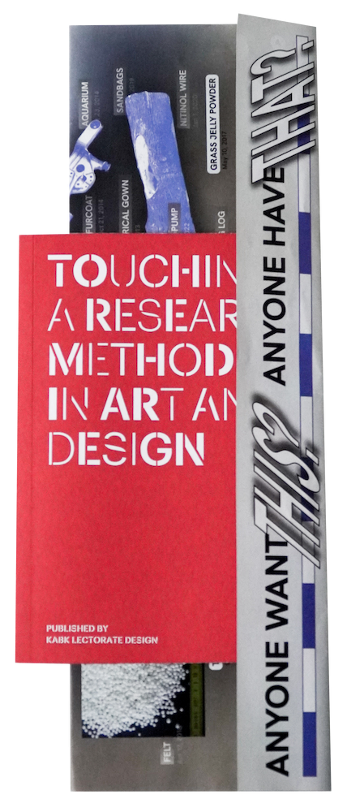

I am a designer and researcher working at the
intersection of technology, critical
theory/philosophy, comedy and food.


Projects (List) ↓
Projects (Map) (WIP) ->


KABK Lectorate: Touching
2022
Visual campaign for KABK Lectorate, research project exploring student interactions with materials, and
an interview with Sitterwerk Library.


Basketology
2021
A philosophy for alternative storytelling, featuring an online platform, podcasts, and hand-woven furniture. Created as a graduation project and awarded the Waag Technology & Society Award.
Eye of Jeronimo
2022
Visual identity for Eye of Jeronimo, a producer of colorful, hand-made kaleidoscopes.
Apophenic Taxonomies
2023
A workshop series co-created with Mariana Fernandez Mora, exploring AI-generated cultural production, alternative taxonomies, and apophenic associations.

Selective Hoarding
2020
A publication exploring the themes of collecting and hoarding, featuring strange objects from the International Institute of Social History (IISG) in Amsterdam.


FEM + TECH Group
2023
A reading group focused on feminist approaches to digital spaces, concluding with an event featuring Cyberfeminism Index by Mindy Seu.


What -> Where Creativity
2024
An academic article on creativity and generative AI, co-authored with Dr. Claudio Celis Bueno and Dr. Pei Sze-Chow, and a workshop exploring AI-based remixes of culture.

How It Really Happened
2019
A visual essay remixing Larousse’s Encyclopaedia of Mythology by replacing the original images with their visual anagrams.